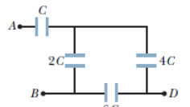
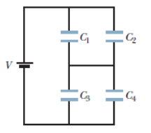

Capacitors
-
Definition
- A CAPACITOR is a device that stores charge. It consists of two conductors separated by an insulator or dielectric. The capacitance (C) of a capacitor is defined as
- For Q in Coulombs and V in Volts, C is in Farads (F).
- The capacitance of a parallel-plate capacitor whose opposing plate faces, each of area A, are separated by a small distance d is given by:
- Where: is the dimensionless dielectric constant of the non-conducting material (the dielectric) between the plates.
- Dielectrics provide the following advantages:
- Increase in capacitance.
- Increase the maximum operating voltage.
- Possible mechanical support between the plates...
- This allows the plates to be close together without touching.
- This decreases d and increases C.
- For vacuum, K = 1, so that a dielectric-filled parallel-plate capacitor has a capacitance K times larger than the same capacitor with vacuum between its plates.
- ε = permittivity of the dielectric.
- Permittivity - the ability of a substance to store electrical energy in an electric field.
- ε0 = 8.85 x 10^-12 F/m is the permittivity of free space (absolute permittivity).
- As shown in the figure below, capacitances add for capacitors in parallel, whereas reciprocal capacitances add for capacitors in series.
- The energy stored in a capacitor is equal to the total work done or energy used up in transferring electrons from one plate to the other.
-
Sample Problems
- 1. (a) When a battery is connected to the plates of a 3.00-µF capacitor, it stores a charge of 27.0 µC. What is the voltage of the battery? (b) If the same capacitor is connected to another battery and 36.0 µC of charge is stored on the capacitor, what is the voltage of the battery?
- 2. The parallel plates of a 1.0-F capacitor are 1.0 mm apart. What is the plate’s area?
- 3. A certain parallel-plate capacitor consists of two plates, each with area 200 cm2, separated by a 0.40-cm air gap. (a)Compute its capacitance. (b)If the capacitor is connected across a 500 V source, find the charge on it, the energy stored in it, and the value of electric field E between the plates, (c) If a liquid with K = 2.60 is poured between the plates so as to fill the air gap, how much additional charge will flow onto the capacitor from the 500 V source?
- 4. The capacitances of the four capacitors shown are given in terms of a certain quantity C. (a) If C = 50 µF, what is the equivalent capacitance between points A and B? (b) Repeat for points A and D.
- 
- 5. In figure below, V = 12 V, C1 = C4 = 2.0 µF, C2 = 4.0 µF, and C3 = 1.0 µF. What are the charge and voltage on each capacitor?
- 